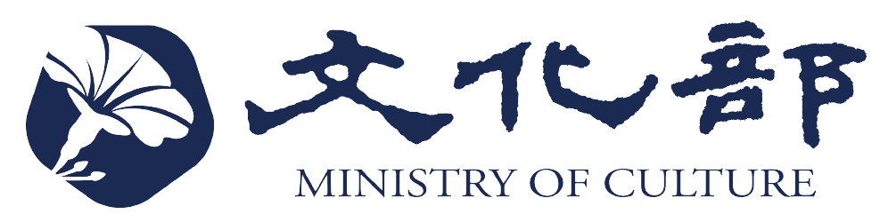
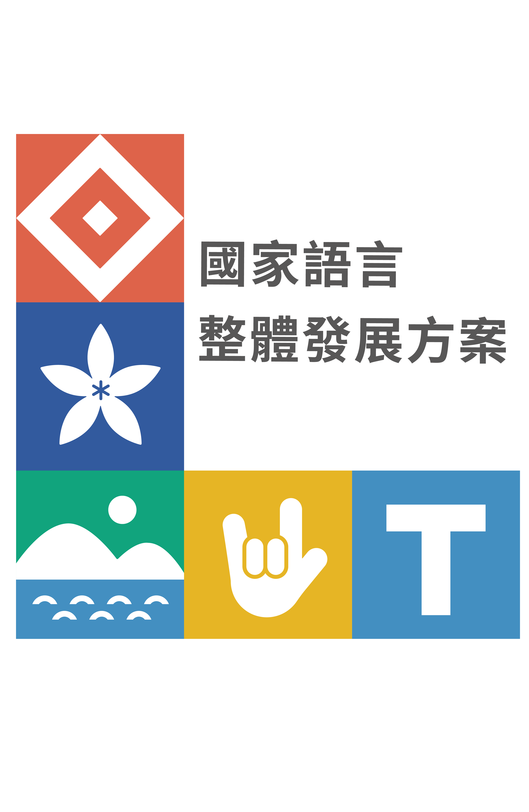
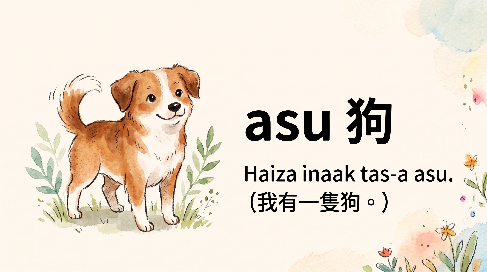

The project
繪本序
先認識故事的來處，再翻開每一本繪本。
計畫目的
預期目標


Five voices
五本繪本
每一本都保留自己的語別與社群聲音。
Listen to the stories
聽繪本
每一本繪本未來對應一支 YouTube 有聲影片。
族語學習
巒群布農語・動物閃卡
先聽族語單字與例句，再翻看中文提示。完成閱讀後，可以挑戰 10 題聽音選圖片。

族語單字
asu
族語例句
Haiza inaak tas-a asu.
我有一隻狗。
1 / 10
聽音選圖
第 1 / 10 題請聽族語，選出正確的圖片
Design notes
設計理念
People behind the books
製作團隊
讓語言、生活經驗與飲食文化記憶一起被留下來。